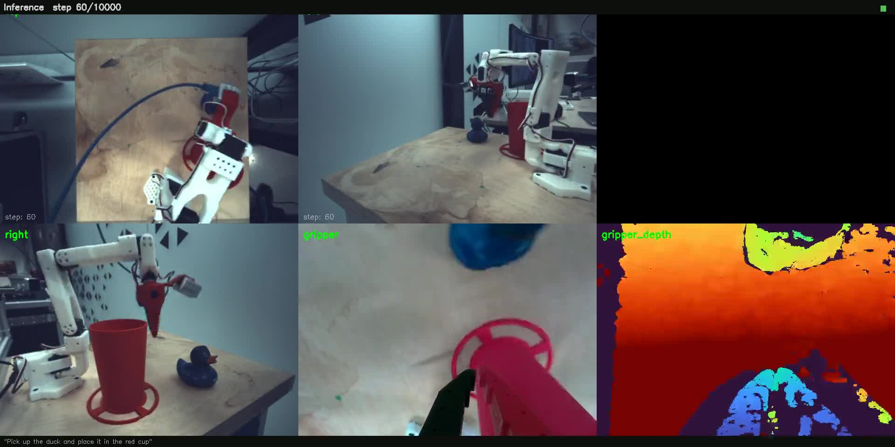

Office demo · SmolVLA + SO‑101
Robot learning, shown live
Today’s demo: a fine-tuned SmolVLA policy observes the workspace and sends actions to a SO‑101 robot arm.

Policy rollout / task attempt
Goal
Make robot behavior learnable from examples, not hand-coded for every new task.
Demo object
SO‑101 arm, camera observations, language instruction, SmolVLA action chunks.